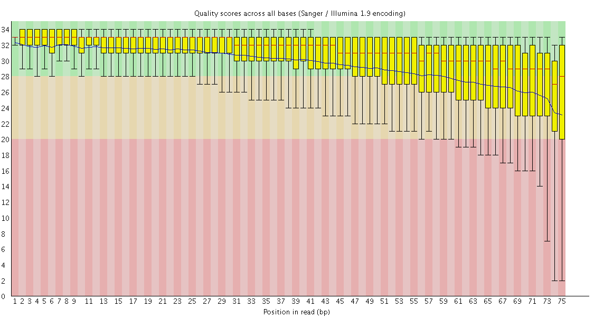
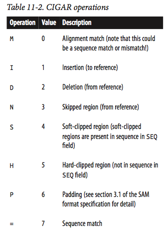

class: center, middle # Sequence & Alignment Data ## Buffalo Chapters 10 & 11 ??? Notes for the _first_ slide! --- # Sequence & Alignment Data ## Outline * Understanding FASTA and FASTQ file formats * Interpret FASTQ quality metrics * download [FastQC](http://www.bioinformatics.babraham.ac.uk/projects/download.html#fastqc) * pull from [course repository](https://github.com/EEOB-BioData/BCB546X-Spring2017) to get `Week_12/data` files * Bioinformatics pipelines * Discussion * Python homework (if there's time) --- # FASTA The FASTA file format was developed for the [FASTA alignment software package](http://fasta.bioch.virginia.edu/fasta_www2/fasta_list2.shtml). -- FASTA files are used to store many data types: * reference genome files * protein and transcript sequences * alignments -- Each sequence in a FASTA file is represented by 2 parts: 1. The description/identifier line starting with `>` 2. The sequence (can be a single line or interleaved) -- Let's take a look at a FASTA file from the Buffalo online materials for Chapter 10: ``` $ head -10 egfr_flank.fasta ``` --- # FASTA The identifier line has no specified format and can therefore vary greatly, even for the same gene or transcript: ``` >ENSMUSG00000020122|ENSMUST00000138518 > ENSMUSG00000020122|ENSMUST00000125984 >ENSMUSG00000020122|ENSMUST00000125984|epidermal growth factor receptor >ENSMUSG00000020122|ENSMUST00000125984|Egfr >ENSMUSG00000020122|ENSMUST00000125984|11|ENSFM00410000138465 ``` -- This makes it very difficult to write generic parsers for FASTA files. -- It is important to use a consistent convention for FASTA sequence descriptions. -- Given the lack of specificity in identifier format, what steps would you want to take when working with outside data? --- # FASTA A common convention is to list the identifier, then a space, then a comment: ``` >gene_00284728 length=231;type=dna GAGAACTGATTCTGTTACCGCAGGGCATTCGGATGTGCTAAGGTAGTAATCCATTATAAGTAACATGCGCGGAATATCCG GAGGTCATAGTCGTAATGCATAATTATTCCCTCCCTCAGAAGGACTCCCTTGCGAGACGCCAATACCAAAGACTTTCGTA GCTGGAACGATTGGACGGCCCAACCGGGGGGAGTCGGCTATACGTCTGATTGCTACGCCTGGACTTCTCTT ``` -- Using this convention, it is important that the identifier is unique. --- # FASTQ The FASTQ format was developed to store a FASTA-formatted sequence and associated quality scores. -- Let's take a look at a typical FASTQ and see if we can figure out the structure of the file: -- ``` $ head -10 contam.fastq ``` -- Each entry typically has 4 parts: 1. A header line beginning with `@` containing the record identifier and other information. 2. The DNA sequence (can be on 1 or many lines) 3. A line beginning with just `+` 4. Quality scores for each base encoded in ASCII format which are same length as sequence. --- # FASTQ The `@` symbol utilized in FASTQ files can be particularly tricky -- For example, let's try to grep identifiers using this symbol: ``` $ grep -c "^@" untreated1_chr4.fq ``` -- Does this count make sense if every FASTQ entry is four lines? -- Inspect the first row of the `untreated1_chr4.fq` file to see if you can figure out what's going on: ``` $ head -4 untreated1_chr4.fq ``` -- A better solution to determining the number of FASTQ entries: ``` $ module load bioawk $ bioawk -cfastx 'END{print NR}' untreated1_chr4.fq ``` --- # Converting Quality Scores The quality scores in FASTQ files are ASCII character data which can be converted to decimal data -- <div style="text-align:center"><a href="https://upload.wikimedia.org/wikipedia/commons/thumb/1/1b/ASCII-Table-wide.svg/1280px-ASCII-Table-wide.svg.png"><img src="https://upload.wikimedia.org/wikipedia/commons/thumb/1/1b/ASCII-Table-wide.svg/1280px-ASCII-Table-wide.svg.png" alt="gource" width="600" /></a></div> --- # Converting Quality Scores Once converted to decimal data, we can utilize platform-specific conversions to determine the probability a given base call is incorrect: -- <br> <div style="text-align:center"></div> --- # Converting Quality Scores Let's use the Python function `ord()` to convert a set of ASCII character quality scores to their decimal values: ``` $ python >>> qual = "JJJJJJJJJJJJGJJJJJIIJJJJJIGJJJJJIJJJJJJJIJIJJJJHHHHHFFFDFCCC" >>> [ord(b) for b in qual] ``` -- And now let's use the information from the table in the previous slide to convert these Illumina 1.8 data to PHRED quality scores: ``` >>> phred = [ord(b)-33 for b in qual] ``` -- Finally, let's use the following equation for PHRED scores to calculate the probability that each base is incorrect: ``` >>> pr_phred = [10**(-q/10) for q in phred] ``` --- # Evaluating a Seqence's Quality Scores * Notice any trend in quality scores across the sequence? -- * Any ideas what's going on here? -- * Let's see if the following video on Illumina sequencing technology sheds some light: -- [Illumina Sequencing Methodology](https://www.youtube.com/watch?annotation_id=annotation_228575861&feature=iv&src_vid=womKfikWlxM&v=fCd6B5HRaZ8) -- * What is the advantage of generating sequencing foci through bridge amplification? -- * Why would you sequence paired end reads in tandem rather than simultaneously? -- * What would happen if templates in a sequencing focus fell out of phase? --- # Summarizing a FASTQ File The program [FastQC](http://www.bioinformatics.babraham.ac.uk/projects/download.html#fastqc) provides a way for you to summarize and visually inspect your FASTQ file. <div style="text-align:center"></div> --- # Summarizing a FASTQ File The per-base sequence quality view allows you to visualize the distribution of quality scores per position over all sequences in the file. <div style="text-align:center"></div> --- # Trimming Low-Quality Bases In *Bioinformatics Data Skills* two command-line tools are used to trim sequences. These are [`sickle`](https://github.com/najoshi/sickle) and [`seqtk`](https://github.com/lh3/seqtk). Since these tools are not available for all operating systems, the trimmed files are in the course repository. Both are easy to install on Mac OS X if you use Homebrew. For example: ``` $ brew install sickle ``` Default trimming a single-end read with `sickle se`: ``` $ sickle se -f untreated1_chr4.fq -t sanger -o untreated1_chr4_sickle.fq ``` <br> Default trimming a single-end read with `seqtk trimfq`: ``` $ seqtk trimfq untreated1_chr4.fq > untreated1_chr4_trimfq.fq ``` --- # Trimming Low-Quality Bases We can use FastQC to inspect our trimmed files. The book, *Bioinformatics Data Skills*, provides an R-script for plotting a similar comparison: <div style="text-align:center"></div> --- # Working with Alignment Data -- * Many applications of next-generation sequencing involve mapping reads to a reference genome (Can you describe a few?) -- * The process of mapping reads produces an alignment of these reads on a reference coordinate system -- * Alignments are most frequently formatted as what are known as "SAM" and "BAM" files -- * Because these alignments contain all mapped reads, they can be massive in size and it is important to know how to work efficiently with these files in order to extract information --- # Inspecting a SAM file: -- Let's take a look at the _C. elegans_ SAM file from the Buffalo online materials for Chapter 11: ``` head -n 10 celegans.sam ``` -- * `@SQ` entries in the header include information about sequences in the alignment including their name (SN) and length (LN) -- * `@RG` entries include information about the data and sample generated including the batch of sequence (ID), the individual sequenced (SM), and the platform used for sequencing (PL) -- * `@PG` entries include metadata about the programs used to create and process the SAM/BAM files -- While `head` will work for plain text SAM files, this will not work for binary BAM files...a better approach is to use the package `samtools` --- # Introduction to `samtools`: -- Let's inspect the headers of our _C. elegans_ SAM and BAM files using `samtools`: ``` $ module load samtools $ samtools view -H celegans.sam $ samtools view -H celegans.bam ``` -- * Note that, unlike using the `head` command on our SAM file, `samtools` __only__ returns the header of the files -- * Also, we can combine `samtools` commands with the basic UNIX we've learned to pull out specific elements of the header: ``` $ samtools view -H celegans.bam | grep "^@RG" ``` --- # Introduction to `samtools`: Now that we have a good feel for the header, let's take a look at the alignment portion of SAM/BAM files: ``` $ samtools view celegans.sam | head -n 1 ``` -- This is a little difficult to make sense of, so let's replace tabs with returns so can individually inspect each field: ``` $ samtools view celegans.sam | tr '\t' '\n' | head -n 11 ``` --- # Components of each alignment entry: I_2011868_2012306_0:0:0_0:0:0_2489 (sequence read name) -- 83 (bit flag) -- I (reference name, e.g., chromosome I) -- 2012257 (leftmost base position of the sequence) -- 40 (mapping quality) -- 50M (CIGAR string) -- = (RNEXT, reference name) -- 2011868 (PNEXT, reference position) -- -439 (TLEN, template length for paired-end reads) -- CAAAAAATTTTGAAAAAAAAAATTGAATAAAAATTCACGGATTTCTGGCT -- 22222222222222222222222222222222222222222222222222 --- # Bitwise Flags -- * Encode many attributes of the sequences in an alignment: * unmapped * paired-end * aligned in reverse complement * QC failure * etc... -- For example, let's take a look at what the bitwise flag tells us about the sequence in the previous slide: ``` $ samtools flags 83 ``` -- We can also use `samtools` to find out what the bitwise flag is for a particular set of conditions: ``` $ samtools flags paired,read1,qcfail ``` --- # CIGAR Strings: -- Like bitwise flags, CIGAR Strings also encode attributes of the sequence: <div style="text-align:center"></div> --- # CIGAR Strings: -- Based on the previous table, can you determine what the following CIGAR string is telling you about the sequence? -- 43S6M1I26M -- 43S -- 6M -- 1I -- 26M -- The total should add up to the length of a given sequence --- ## Gathering information on alignments with `samtools`: -- Now that we understand the format of the alignments, we can use this information to gather information -- For example, what if we want to know the relative proportion of mapped and properly paired reads to unmapped reads in an alignment of human data? -- First, let's figure out the bitwise flags of both mapped/properly paired and unmapped reads: ``` samtools flags Proper_Pair samtools flags UNMAP ``` -- Now let's use these flags and the `view` command in `samtools` to find the relative proportion: ``` samtools view -f 4 NA12891_CEU_sample.bam | wc -l samtools view -f 2 NA12891_CEU_sample.bam | wc -l ``` --- # And so much more!! -- * We're just scratching the surface of the functionality of `samtools` -- * Other applications of this suite of tools include: * Extraction of particular regions of an alignment * Viewing of alignment * Variant calling * etc... etc... -- * Additional functionality is further described in Buffalo Chapter 11 and I'd encourage you to work through this!